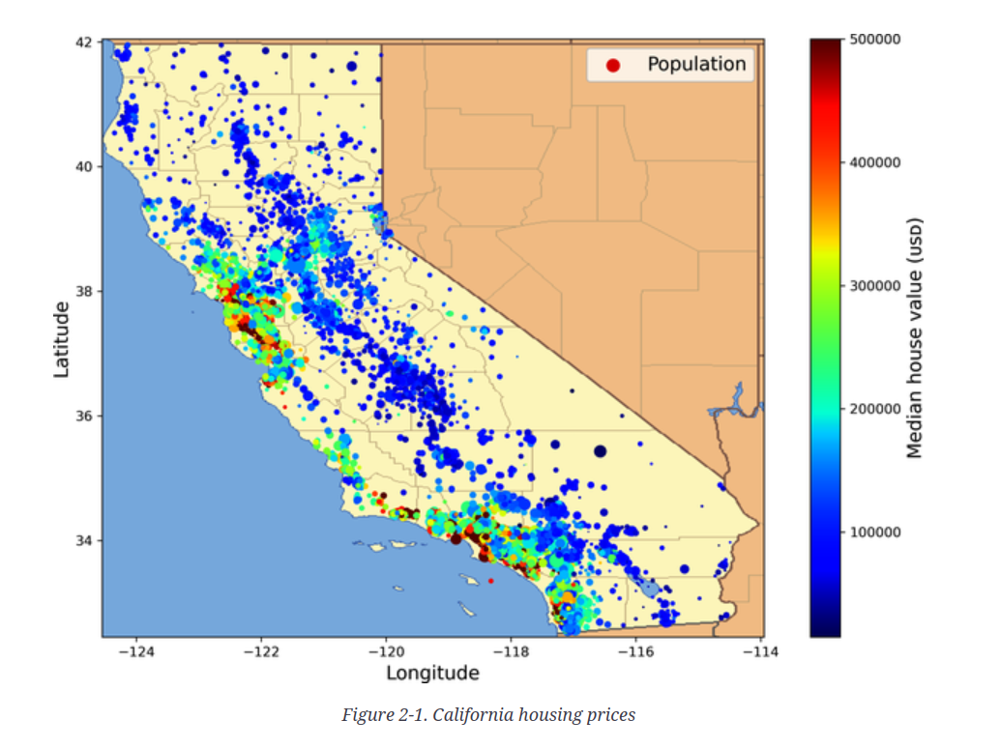

Cutting Edge Development Environment for Data Science#
The purpose of this assignment is to get you started in the course and to make sure that you have the necessary software installed on your computer.
Minimal HW requirements: Later generation Macbook Pro or equivalent Windows or Linux laptop with at least 16GB of RAM and 512GB of SSD storage.
Minimal SW Requirements: Although in the description below we may refer to VS Code similar facilities must be provided in PyCharm IDE.
Task 1 - Github and Docker background (10 points)#
If you have no prior experience with Git or Docker, please watch the two videos included in your course site.
After you become familiar with these two technologies, please follow the instructions below to install Docker on your computer. Be careful to follow the instructions for your operating system as detailed in the section “On your own desktop or laptop” depending on the operating system. This is especially critical for Windows users that need to work with WSL2.
Login to dockerhub and submit a screenshot of the docker pull command shown here. The screenshot must be in png format and linked as an image in your README.md (markdown) file - see Task 3.
Task 2 - Star and clone two Github repos (10 points)#
No course or software project starts in vaccumm and you will be working with a variety of github repos. For this assignment, you will be working with two repos:
Course site repo: pantelis/data-mining
Hands on ML3: ageron/handson-ml3
Clone or Fork them.
Ensure that you can launch at the very least the handson-ml3 docker container and attach your VSCode IDE to it. Use the GPU version of the Dockerfile if you have an NVIDIA GPU on your computer. If you have Intel or AMD GPUs chances are the Dockerfile.gpu will not work for you. All others, please use the CPU (Dockerfile) version.
Run this notebook in the docker container using your VSCode IDE and save it (preserving all outputs).
NOTE: The course is supported currently by two containers suitable for NVIDIA GPUs. Those that have NVIDIA GPUs will be able to edit the .devcontainer contents to point to either version of the container (pytorch or tensorflow) and automatically attach the VSCode to it. The attachment will build the course site if everything works. You are not required to do this for this assignment.
Task 3 - Create your own assignment repo (15 points)#
Follow the video instructions here to set yourself up for submitting this and other assignments.
Copy the docker folder and the .gitignore file from the handson-ml3 repo to the root of your repo.
Your assignments repo must have a directory called assignment-1 - all subsequent subtasks refer to this directory.
Include in the
assignment-1dir a README.md file with a link to png screenshot of Task 1. If you are not familiar with markdown syntax, please refer to this tutorial. Note that markdown is used in all software projects and your documentation currently limited to this README.md file must look good. Ensure that the README.md file is parsable by github.com and the screenshot is shown (5 points)Copy the notebook of task 2 and successfully execute it in the container when this execution is triggered by the VSCode IDE. Save the output. This is a task identical to Task 2 but this is now happening in your own repo (5 points)
Push the changes to your repo and ensure that the github workflow is triggered and the results is a green checkmark. If this is happening your TA will be able to grade your assignment. (5 points)
Task 4 - Your first orchestrated data pipeline (35 points)#

In this chapter a house price prediction problem is presented. You are not concerned with the details of the problem but with the data pipeline i.e. how to transform the raw data and produce a dataset that can be shared in a so called data hub on one hand and on the other to be easily consumable by a trainer - the next pipeline that will create a machine learning model.
Using the corresponding notebook in the handson-ml3 repo as a guide, create a data pipeline that will transform the raw data of the dataset. There is a catch though. Most data pipelines are not to be executed once but they need the support of an orchestrator that will execute the pipelines again and again and create the materialized data. You will be using a state of the art orchestrator called Dagster to enable this in your pipeline and at the same time provide the exposure needed for you and your team to visualize the pipeline execution and have a fully documented data lineage.
Task 4.1 - Install Dagster (5 points)#
To state the obvious you will be using Dagster inside the docker development environment you have built in earlier tasks. Use the pip portion of your python environment specification to install all dagster components. Your docker must be recycled to absorb the changes your made. Note that you need to open up the port 3000 in your docker container to be able to access the Dagster UI.
Task 4.2 - Create the Dagster project (10 points)#
Follow the instructions here to create the project that will host your pipeline.
Task 4.3 - Create the pipeline (20 points)#
Implement all the stages presented in the textbook notebook - from downloading the data to just before the start of training (cells 4 to 118 approx). Its up to you how many stages you will split the data pipeline (ETL) but it is advised to have more stages than less since you can get visibility into the processing in the UI.
Task 5 - Create Hugging Face Dataset and add it to your profile (30 points)#
All the other tasks were done to prepare you for this one. You will be using the data pipeline you created in Task 4 to create a dataset that will be shared in a data hub - one of the most important destinations is the Hugging Face Dataset Hub.
Task 5.1 - Create a Hugging Face account (5 points)#
Create your profile and treat it with the same level of care as your github profile. Your Github and HF profiles serve different purposes. Gihub is used to advertise your abilities as a software but has little to offer in terms of your demonstrating your apps. HF does exactly that and they are therefore complementary to each other.
Task 5.2 - Expose your dataset using Hugging Face Datasets (15 points)#
Install the datasets package in your development env and follow the instructions here to use the dataset you obtained in Task 4 to programmatically per these instructions upload it to your account. Parquet is the defacto standard for storing datasets. Using the to_parqeuet() method convert your dataset to parquet before uploading it to HF. (10 points)
Ensure that you have structured your dataset HF repository so that users can easily use it per the instructions here. (2.5 points)
Create a dataset card. (2.5 points)
Task 5.3 - Store the dataset in DuckDB (10 points)#
Install DuckDB into your dev env.
Using the Python API load the parquet dataset from HF into DuckDB, an in-memory OLAP database that is becoming extremely popular as the vertically-scalable data warehousing tool of choice in this domain. Alternatively, feel free to use the HF APIs to do so.
Persist the DuckDB database to disk naming the file house_price.db.
You are free to use one or more python scripts (py files) or notebooks to implement the tasks 4-5 above. Some data scientists prefer notebooks, others do not.